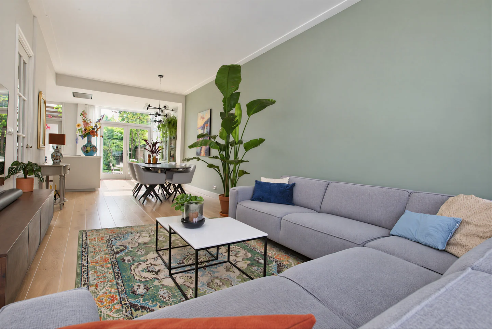
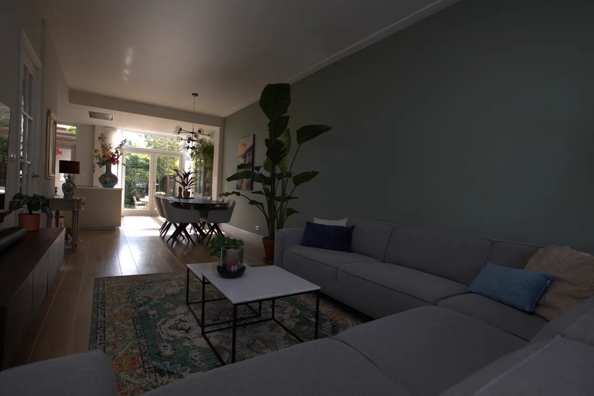
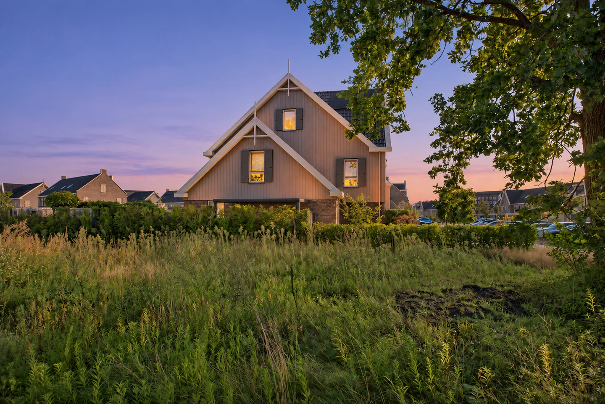
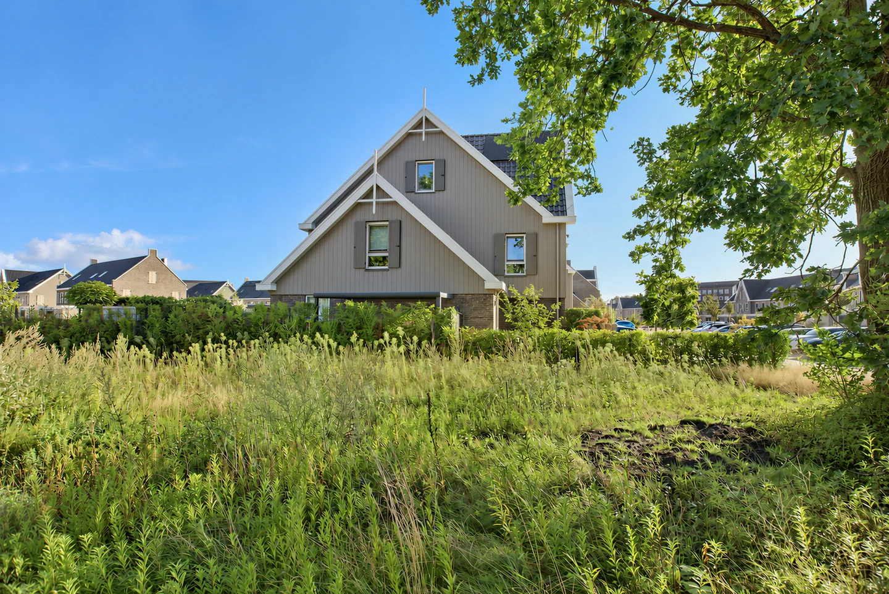
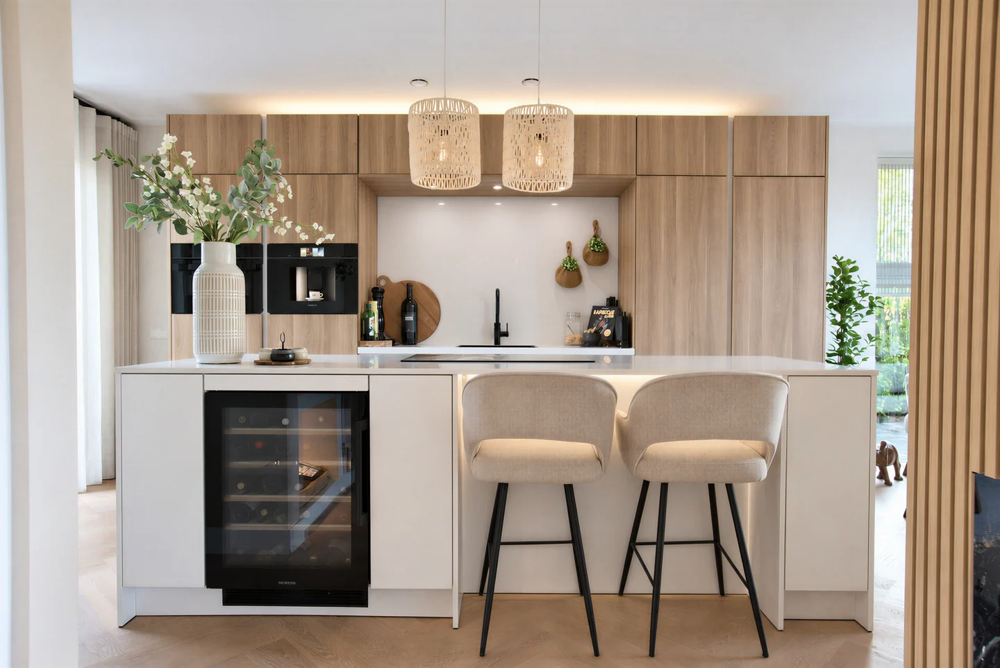

INDEPENDENT PRODUCT / IMAGE EDITING
Photo Finisher.
Better light. Natural color. A clearer view of the space.


The collection.
25 saved edits. Open any scene to compare.
Feature explorations
Three ImageGen concepts from the feature proposal, separate from the saved product results.


09
Daylight to blue hour
A day-to-dusk direction using the photographed setting.
20+ style directions

Original finish24 browser color-grade previews for art direction. Core product finishes: Bright natural, Soft natural, and Warm natural.